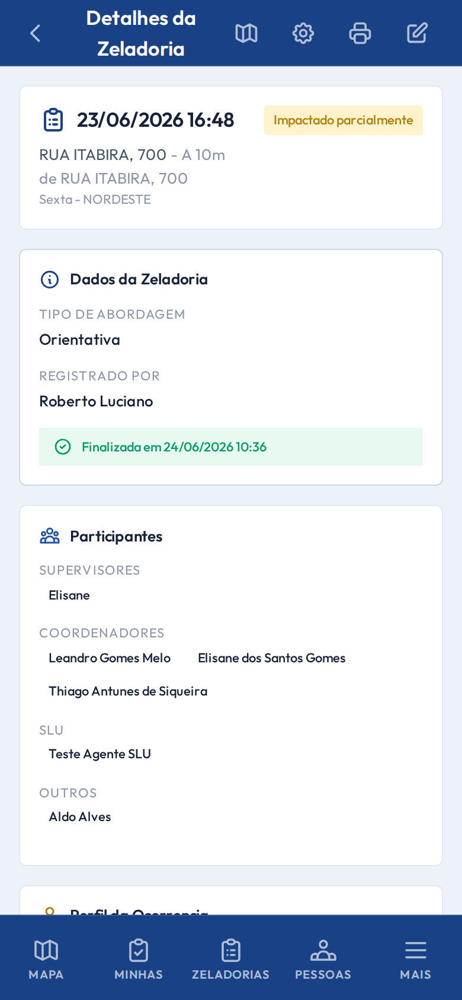

Núcleo operacional
Vistorias
Zeladorias
Formulário em etapas com fotos, participantes e encaminhamentos.
- Criação via mapa ou a partir de um ponto
- Listagem geral e Minhas Zeladorias
- Fotos com legenda e visibilidade no relatório
- Exportação de roteiro para campo
Ciclo de vida
ABERTA → FINALIZADA → (reativar | complementar)
ABERTA → CANCELADA
ABERTA → CANCELADA
/vistorias — Detalhe
